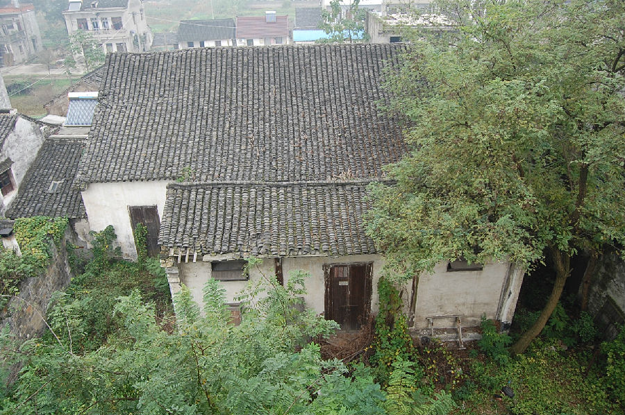

嘉兴市文物保护网 · 市级文物保护点 · 2020-11-03 · 原文

东岳庙位于嘉兴市秀洲区新塍镇东北大街粮管所宿舍3栋北面5米围墙内，从梁架结构判断为明代建筑。坐北朝南，原有布局不明，现仅存一栋建筑为原后殿，占地面积170平方米，通面阔10.51米、通进深16.14米、层高7.01米，两侧为穿斗，有方形斗拱，当中为抬梁，用料较粗大，做工考究，梁架等处红漆尚可见，雕工细致，纹饰有描金痕迹，东西山墙头砖雕细致，屋顶为硬山顶。东岳庙为宗教祭祀建筑，是反映传统社会百姓精神生活的重要载体，经过文革，同类型建筑基本绝灭，此次发现填补了嘉兴相关庙宇的空白，具有较高的历史价值。2010年公布为嘉兴市文物保护点。